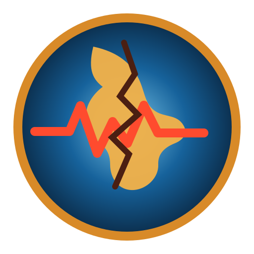

1Datos del evento
⌖Referencia—
◷Fecha y hora origen local—
◎Latitud y longitud—
↧Profundidad—
◉Intensidad máxima reportada—
MMagnitud—

Información y prevención para todos
Accede a la fuente original y a información complementaria del evento sin salir del contexto de GeoSismosLatam.
Clasificación visual basada en los rangos de magnitud mostrados por IGP para sus reportes públicos.
| Fecha/hora | Fuente | M | Prof. | Referencia | Reporte |
|---|
Visualización limpia de tasa relativa, tendencia y concentración espacial. No constituye predicción determinista.
Precipitación, satélite, pronóstico numérico y avisos oficiales para facilitar la prevención ciudadana.
Consulta información oceanográfica oficial y recomendaciones de conservación antes de planificar actividades costeras.
No captures recursos durante vedas ni ejemplares por debajo de la talla mínima legal.
No captures tortugas, cetáceos u otras especies protegidas. Evita manipular fauna marina que no sea objetivo de pesca.
Para pez vela y merlines protegidos por la normativa citada por PRODUCE, la pesca deportiva se permite excepcionalmente bajo captura y liberación.
Lleva tus residuos, evita abandonar líneas y anzuelos y limita la captura a lo que realmente utilizarás cuando esté permitido.
Verifica áreas naturales protegidas, zonas portuarias, Capitanías y restricciones locales antes de pescar.
No pesques desde roqueríos o embarcaciones cuando existan avisos de oleaje anómalo, viento fuerte o mala visibilidad.
Estos sectores se proponen por contar con puertos o referencias costeras con información de mareas/condiciones marinas. No constituyen una autorización oficial de pesca ni garantizan presencia de especies.
Consulta orientativa de fuentes oficiales sobre inundaciones, movimientos en masa, sismos, tsunami y otros peligros.
Zonificación geofísica-geotécnica, capacidad portante y estudios territoriales publicados por el IGP.
El portal prioriza información oficial MIDAGRI/SIEA y fuentes técnicas; las estimaciones de cosecha se muestran como referencias y no sustituyen reportes de campo.
Acceso a fuentes y publicaciones. Las noticias externas deben verificarse en su fuente original.
Cultura de prevención y construcción segura para reducir exposición y vulnerabilidad.
IGP/CENSIS se presenta como fuente oficial peruana. USGS funciona como contraste internacional. GeoSismosLatam correlaciona eventos cercanos en tiempo y espacio para reducir duplicados.
Combina un componente temporal inspirado en procesos de réplicas, ponderación por magnitud y un fondo espacial construido con el catálogo histórico disponible. El resultado es un índice relativo y experimental sujeto a validación retrospectiva; no predice fecha, lugar y magnitud exactos de futuros terremotos.
IGP/CENSIS · SENAMHI · CENEPRED/SIGRID · INDECI/COEN · INGEMMET · ANA · MVCS/RNE. Cada portal mantiene acceso a la fuente original.